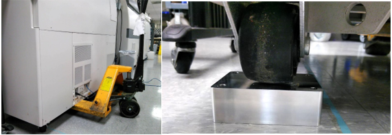
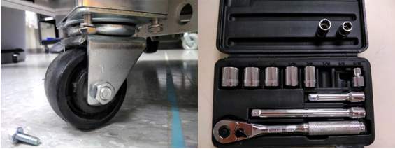

Installing Castor Spacers For Use With DxA
Perform these steps to install Spacer Blocks between the castor wheels and the bottom of DxI instrument. The spacers are used to raise the instrument for connection to the DxA automation line.
-
Use a pallet jack to raise the DxI until the castor wheels are high enough to slip a Spacer Block underneath the castor wheel. (Alternate: Use another type of jack or use the spacer pucks under the height adjustment feet\bolts to raise one end of the DxI).
Caution:
- Do not raise the DxI in the front to back direction because that may cause a tip over hazard.
- Do not raise the instrument using the height adjustment feet\bolts higher than needed to slip the spacer block under the castor wheel (2 spacer pucks needed). It is possible to turn the height adjustment bolt enough that it comes out of its threaded hole.
- Do not move the adjustment feet bolts excessively upward to interfere with or damage the instrument housing.

-
When the instrument is raised, remove one castor and install a Spacer Block between the castor and the instrument frame (Spacer Block, 4 long bolts, 4 washers, 3/8 & 7/16" sockets).

- Install a Spacer Block on the other castor on the same end of the instrument.
- Repeat the process to install the castor Spacer Blocks on the other end of the DxI instrument.
- Remove the pallet jack and roll the DxI up to the DxA automation line for alignment of the Sample Pipettor to the pipetting position. (Refer to the DxA installation procedure for alignment details.)
- After positioning the DxI on the track, raise the DxI slightly using two Spacer Pucks under each height adjustment foot to prevent the DxI from moving, then set the sample pipettor height alignment to the DxA automation line.